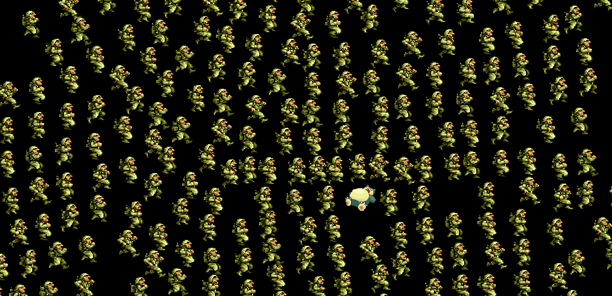
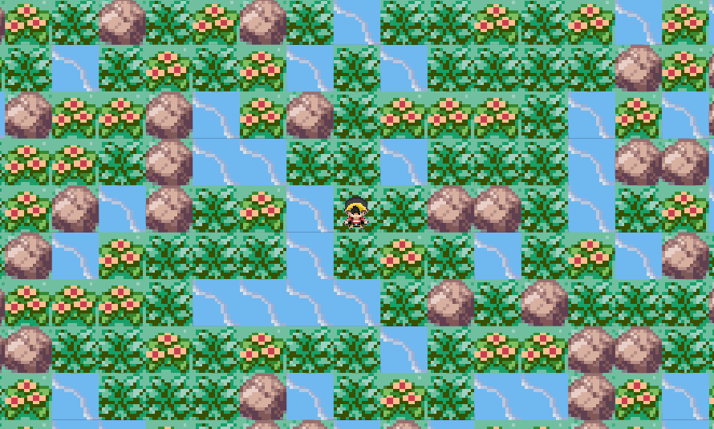
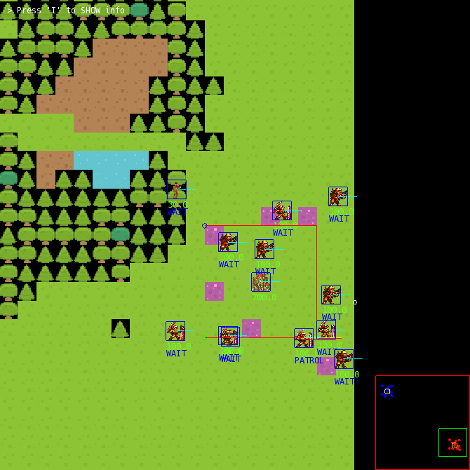
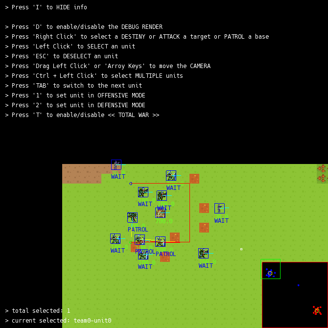
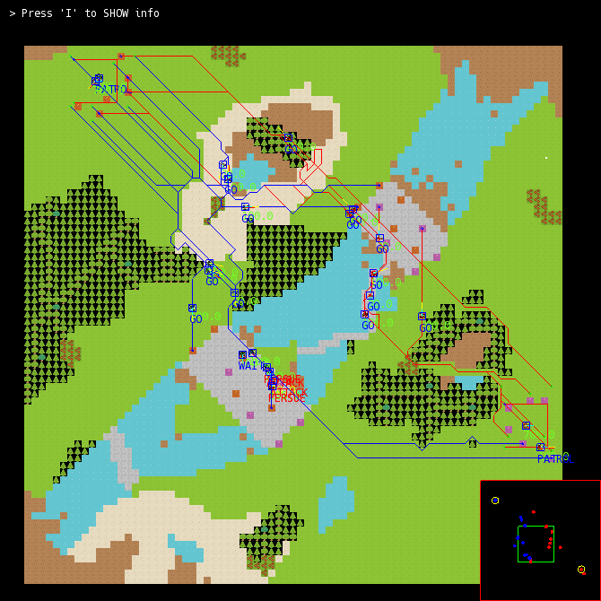
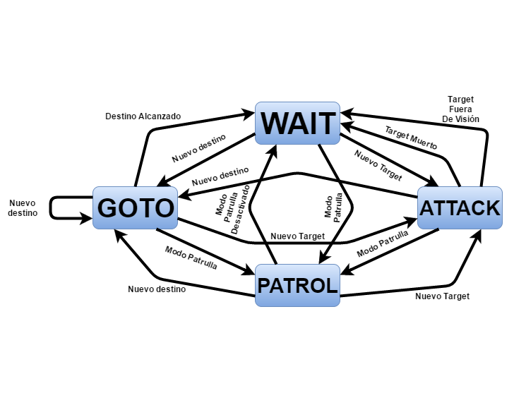

Lords Of The Fallen V 2.5 | Full Game | Longplay Walkthrough Gameplay No Commentary
https://www.youtube.com
C++ Unreal Engine 5 Blueprints GAS Gameplay Porting Consoles Systems CI/CD Build Systems Animation Programming Vulkan OpenGL Python HTML5 Linux
Software Engineer with 9+ years of experience specializing in software architecture, gameplay and systems programming, performance optimization, cross-platform development, and Modern C++ (17/20/23). Graphics API enthusiast with a custom Vulkan 3D Game Engine. I’ve taken part in multiple AA/AAA Unreal Engine projects across all production stages (pre-release, mid-production, and greenfield), such as Lords of the Fallen (2023, PS5, XSX, PC), Gothic Remake (2026, PS5, XSX, PC), and Remothered Tormented Fathers Remaster / Remothered Broken Porcelain Remaster (2026, PS5, XSX, Switch 2, PC). I bring a strong engineering mindset, adaptability, and a hands-on approach to solving complex technical challenges.
HexWorks (CI Games) ARPG Soulslike Multiplayer Coop Unreal Engine 5 PS5 XSX PC
Lords Of The Fallen V 2.5 | Full Game | Longplay Walkthrough Gameplay No Commentary
https://www.youtube.com


Alkimia Interactive (THQ Nordic) ARPG Single Player Unreal Engine 5 PS5 XSX PC

GOTHIC 1 REMAKE Gameplay Walkthrough FULL GAME (4K 60FPS) No Commentary
https://www.youtube.com


Underdog Studio (CI Games) Third Person Action Multiplayer Coop Unreal Engine 5 FlowGraph PS5 XSX PC
GitHub - MothCocoon/FlowGraph: Design-agnostic node system for scripting game’s flow in Unreal Engine
https://github.com

GRIP Studios Third Person Simulation Unreal Engine 5 Mod.io PS5 XSX PC
GitHub - modio/modio-ue: Unreal Engine Plugin for easily integrating mod.io into your game - the UGC management service for game developers
https://github.com

Radical Dreams Entertainment 株式会社 Port Horror Unreal Engine 5 PS5 XSX Switch2 PC

Remothered Remastered - Announcement Trailer
https://www.youtube.com


Cl3ver C++ OpenGL

CL3VER | Real-time Cloud RTX Rendering on Google Cloud
https://www.youtube.com


C++ OpenGL Vulkan GLSL
C++ / OpenGL / Vulkan 3D Game Engine
https://github.com


JavaScript WebGL GLSL
JavaScript + WebGL 2D Game Engine
https://github.com


Java LibGDX State Machines Flocking Pathfinding (A*) Steering Behaviors Game AI
Game AI Project
https://github.com




C++ CMake
Python HTML CSS JSON XML
Python HTML CSS JSON